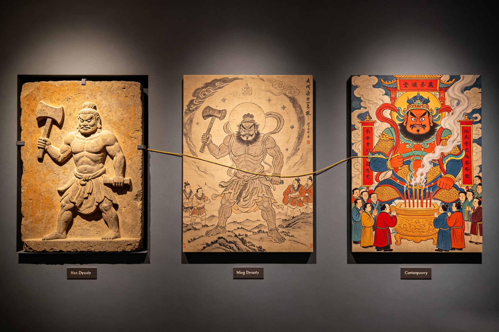

Through 2,000 Years of Culture
The story that shaped a civilization. From Han dynasty stone carvings to modern video games, from classical poetry to eco-philosophy — how Pangu's myth has flowed through every era of Chinese culture and continues to inspire the world.
The earliest known written record of Pangu appears in the Sanwu Liji (三五历纪, "Records of the Three Sovereigns and Five Emperors") by Xu Zheng (徐整), a 3rd-century scholar of the Eastern Wu kingdom during the Three Kingdoms period. This text — preserved only in fragments quoted by later encyclopedists — is the first to describe the cosmic egg, the 18,000-year gestation, and the great division of heaven and earth. Xu Zheng's account is spare and direct, suggesting that he was recording a story already well-known in oral tradition rather than inventing it whole cloth.
Yet Pangu's absence from the oldest Chinese classics is one of the great puzzles of Chinese mythography. He appears in none of the Shang dynasty oracle bones (c. 1250–1046 BCE), the oldest Chinese written records. He is absent from the Zhou dynasty's Book of Documents and the Book of Songs. Even the Han dynasty mythographic compendia — the Shan Hai Jing (Classic of Mountains and Seas) and the Huainanzi — describe cosmic origins without mentioning Pangu by name. This silence has fueled vigorous scholarly debate about Pangu's origins. Some scholars argue that Pangu is a southern Chinese myth, originating in the Chu region (modern Hubei/Hunan) and entering the mainstream only during the chaos of the Three Kingdoms period, when regional traditions found their way into the textual record. Others point to possible influence from Indian creation myths — the cosmic egg motif appears in the Rigveda's Hiranyagarbha hymn, and the spreading of Buddhism across the Silk Road during the Han dynasty could have carried egg-creation imagery into Chinese popular religion. Still others maintain that Pangu was an indigenous folk myth, transmitted orally for centuries in rural communities before Xu Zheng finally committed it to writing — a theory supported by the story's deep roots in folk practice rather than elite literary culture.
Regardless of the debate about his origins, by the Tang dynasty (618–907 CE) Pangu was firmly established as the Chinese creation myth. Tang poets referenced him as a figure of common knowledge, and the great encyclopedias of the period treated his story as canonical. The Yishi (绎史) and Shuyiji (述异记) expanded Xu Zheng's account, adding the elaborate details of the body transformation — his breath becoming wind, his eyes the sun and moon, his blood the rivers. By the Ming dynasty, Journey to the West could casually reference Pangu as a matter of historical fact — the Monkey King's origin story from a stone egg touched by cosmic forces echoes Pangu's emergence from the cosmic egg, a deliberate literary parallel that Ming audiences would have recognized immediately. Pangu, who had never appeared in any oracle bone or bronze inscription, had become so embedded in Chinese cultural consciousness that he was treated as self-evidently real — as real as the mountains that were his bones and the rivers that were his blood.
Pangu's visual legacy in Chinese art spans nearly two millennia, and the way artists have depicted him reveals as much about each era as it does about the myth itself. The triptych of Pangu through Chinese art history — from Han dynasty stone to Ming dynasty ink to contemporary digital — tells the story of a culture's evolving self-image.
Left panel — Han Dynasty Stone Reliefs: The earliest visual depictions of Pangu are found in Han dynasty (206 BCE – 220 CE) tomb carvings from the Wu Family Shrines in Shandong Province. These are primitive, powerful images: a giant figure carved into ochre-colored stone, holding an axe in one hand and a chisel in the other, his body compact and elemental. The reliefs are not refined by later standards — they are the work of craftsmen who worked with hammer and chisel on unyielding stone, and the effort shows. These carvings suggest that Pangu played a role in funerary cosmology: the deceased, by being placed in a tomb decorated with Pangu imagery, was symbolically returning to the cosmic body from which all things came. Death, in this framework, was not an ending but a reintegration — the soul returning to the body of the first being, just as rivers return to the sea.
Center panel — Ming Dynasty Illustrations: The Ming dynasty (1368–1644) saw an explosion of illustrated editions of mythological texts. Pangu was depicted in the gongbi (工笔) style — meticulous, fine brushwork with mineral pigments. He appears as a bearded giant with wild flowing hair, clothed in leaves and animal skins, wielding his axe against a background of swirling clouds and newborn stars. The Ming artists, influenced by the visual vocabulary of Journey to the West illustrations, gave Pangu a heroic, almost operatic quality — his muscles straining, his expression a mix of exertion and ecstasy, the cosmic forces of yin and yang swirling around him in perfect balance. These illustrations established the visual template for Pangu that would persist for centuries: the giant, the axe, the cosmic egg fragments, the dividing heavens and earth.
Right panel — Contemporary Art: Modern Chinese artists have reimagined Pangu in radically diverse styles. Xu Bing, one of China's most internationally renowned contemporary artists, created installations referencing the cosmic egg — including a nine-meter egg-shaped structure covered in enigmatic pseudo-characters, inviting viewers to contemplate the moment before language, before meaning, before division. Cai Guo-Qiang, known for his gunpowder paintings, created a piece evoking the primordial explosion of creation — a violent, beautiful burst of energy on paper that captures the instant of Pangu's first swing. In the digital realm, Chinese concept artists and illustrators for the video game industry have created Pangu for a global audience — towering figures rendered in photorealistic detail, cosmic axes that glow with unearthly light, the primordial void depicted with the visual language of astrophysics. In Buddhist art, where Guanyin is the most-depicted figure, Pangu occasionally appears in the margins of creation-themed murals, a reminder that before the Buddha's teachings illuminated the world, there was the first being who made the world itself. In Taoist iconography, Pangu is sometimes depicted alongside the Three Pure Ones, as a figure who predates even the highest Taoist deities — the raw material from which the cosmos was formed before the gods took their thrones.
In literature, Pangu's presence is equally pervasive. Tang dynasty poets used "the body that became mountains" as a shorthand for profound sacrifice. Song dynasty philosophers debated the relationship between Pangu and the Dao — was Pangu a manifestation of the Dao, or was the Dao the principle that animated Pangu? Modern Chinese science fiction, from Liu Cixin's The Three-Body Problem to myriad web novels, uses cosmic imagery that echoes Pangu's transformation — universes born from sacrifice, bodies that become worlds, the fragility and preciousness of existence in a cosmos that is simultaneously indifferent and intimate.
In the 21st century, Pangu has found a vast new audience through film, television, and video games — the storytelling media that now reach more people in a single day than Xu Zheng's written record reached in a millennium.
Film & Television: Pangu appears in numerous Chinese fantasy TV series and animated films. The 2019 animated feature Ne Zha (哪吒之魔童降世) — China's highest-grossing animated film, which introduced Nezha to a global audience — references Pangu's creation in its cosmic backstory, establishing the primordial context for Nezha's rebellion against fate. Various CCTV documentary series have dramatized the Pangu myth with CGI, presenting him to tens of millions of viewers as the origin point of Chinese civilization. The 2023 epic Creation of the Gods I: Kingdom of Storms, though focused on the Fengshen cycle, opens with a prologue that visually quotes Pangu's division of heaven and earth, grounding its story of divine conflict in the deepest strata of Chinese myth.
Video Games: Pangu has become a major figure in Chinese gaming. Age of Mythology: Retold — Immortal Pillars (2024, Xbox/Steam) features Pangu as a primordial force, a world-creating entity whose power can be harnessed by players. The mobile game Honor of Kings (王者荣耀) — one of the most-played games on the planet with over 100 million monthly active users — features Pangu as a playable hero: a towering warrior with cosmic abilities, his axe capable of splitting the battlefield as it once split the universe. His design in the game blends classical iconography (the axe, the flowing hair, the cosmic robes) with contemporary superhero aesthetics, making Pangu accessible to a generation that may never visit a temple but knows him through a smartphone screen.
Perhaps most significantly, Genshin Impact (原神), China's most globally successful video game export, draws heavily on Pangu's body-transformation myth for its world-building. The game's central premise — that the landscape of Teyvat IS the body of a primordial being, and that the player's journey involves understanding the sacrifice that created the world — is essentially the Pangu myth translated into interactive form. Millions of players outside China, who may never have heard the name Pangu, are nonetheless absorbing the story's core themes: that the world is alive, that creation requires sacrifice, and that every mountain and river carries the memory of the first being who gave everything.
Web Novels (网络小说): The xianxia (仙侠) and xuanhuan (玄幻) genres — Chinese fantasy web novels with hundreds of millions of readers across platforms like Qidian and Zongheng — constantly reference Pangu. Common tropes include "Pangu's Axe" as the ultimate treasure, sought by protagonists across thousands of chapters; "Pangu's bloodline" as the source of the hero's latent power; and "the world created by Pangu" as the setting that must be saved from cosmic destruction. These novels, mostly untranslated but read by an audience larger than the combined readership of all Western fantasy series, keep Pangu at the center of Chinese popular imagination. Global Reach: Outside China, Pangu appears in SMITE (as a playable god in the multiplayer battle arena), the tabletop RPG Scion (as a primordial titan), and various anime and manga, steadily gaining recognition alongside the most globally famous Chinese mythological figure, Sun Wukong, whose own journey from Chinese folk hero to global icon points the way for Pangu's increasing presence in world culture.
In the 21st century, Pangu has transcended his origins as a mythic figure to become a living symbol with relevance to some of the most pressing issues of our time — environmental ethics, national identity, scientific imagery, and philosophical inquiry into the nature of being.
Environmental Philosophy: Pangu's myth provides one of the most powerful ecological metaphors in any cultural tradition: the world IS a body. To pollute a river is to poison Pangu's blood. To clear a forest is to strip Pangu's flesh. To extract minerals from the earth is to mine Pangu's bones. Chinese environmental philosophers and activists have increasingly invoked Pangu as a cultural foundation for ecological ethics rooted in Chinese tradition rather than Western imports — an alternative to the anthropocentric frameworks of European environmentalism. The concept of "Pangu's Body" (盘古之体) has been used in environmental education in some Chinese schools, teaching children that respect for nature is not a foreign idea but a rediscovery of their own deepest cultural inheritance.
National Identity: In Chinese cultural diplomacy, Pangu is presented alongside Nüwa as evidence of China's distinct cosmological tradition — a creation story that emphasizes sacrifice, transformation, and continuity rather than the conquest and domination found in some Western creation narratives. The Pangu myth offers an alternative origin story for civilization itself: one where the first act is not a command but a gift, not an assertion of power but an exhaustion of self. This narrative resonates with China's presentation of itself as a civilization that seeks harmony rather than hegemony, a culture that values collective well-being over individual accumulation.
Scientific Metaphor: Chinese science communicators have found in Pangu a powerful metaphor for the Big Bang theory. The cosmic egg of Hundun = the primordial singularity. The 18,000-year gestation = the inflationary epoch. The great division = the separation of fundamental forces. The body transformation = stellar nucleosynthesis, the process by which the first stars forged the elements from which all life is made. The slogan "we are made of star-stuff" — Carl Sagan's famous phrase — becomes in Chinese popular science "we are made of Pangu's body." This metaphor appears in Chinese planetariums, science museums, and educational television, bridging the gap between ancient myth and modern cosmology in a way that feels natural rather than forced.
Philosophical Relevance: Pangu's story embodies core Chinese philosophical concepts that are finding new resonance in global intellectual discourse. Tianren heyi (天人合一, the unity of heaven and humanity) — the idea that humans are not separate from the cosmos but part of it — finds its most literal expression in Pangu's body-becoming-world. Hua (化, transformation) — the understanding that change is the fundamental nature of reality — is the entire mechanism of the myth. And the virtue of self-giving — creation through sacrifice, without expectation of worship or reward — offers an ethical model that speaks to contemporary concerns about sustainability, collective responsibility, and the meaning of a life well-lived.
The Feminist Reading: While Pangu is male-presenting, his story subverts many masculine power narratives. He does not conquer. He does not rule. He does not create through force of will or word. He creates through labor and exhaustion — his body becomes the nurturing substance from which all life emerges, a role traditionally coded feminine in most world mythologies. Some feminist scholars read Pangu as transcending gender binaries altogether: he was the first and only being at a time when gender did not yet exist, when the categories of male and female had not yet been created. In this reading, Pangu is not a "male" creator but a pre-gendered one — a being whose masculinity and femininity are equally present, equally necessary, equally sacrificed. This reading resonates with the Queen Mother of the West's own trajectory through feminist reinterpretation — both figures, the oldest and the most powerful, the first being and the empress of immortality, challenge the gender assumptions that later Chinese culture imposed on them. And in Guanyin, whose gender transformation from male Avalokiteshvara to female Goddess of Mercy mirrors the fluidity of divine identity in Chinese religion, Pangu finds a fellow traveler across the boundaries of category and kind.
Pangu's legacy is ultimately the story of how a myth survives. He survived the transition from oral tradition to written record, from regional folk story to national creation myth, from temple worship to digital entertainment. He survived the iconoclasm of the Cultural Revolution and the indifference of modernization. He survived because his story is not merely a story about the past — it is a story about the relationship between existence and sacrifice, between body and world, between the one and the many. As long as there are mountains to climb, rivers to cross, and stars to gaze at, there will be people who feel, without knowing why, that the world is alive — that it is a body. And they will be telling the story of Pangu, whether they know his name or not.
The earliest known written record is in the Sanwu Liji (三五历纪) by Xu Zheng, a 3rd-century CE scholar of the Three Kingdoms period. Pangu does not appear in the oldest Chinese classics such as the Shang dynasty oracle bones or the Zhou dynasty Book of Documents, leading to scholarly debate about whether the myth originated in southern China, was influenced by Indian creation traditions via the Silk Road, or was an indigenous folk myth transmitted orally for centuries before being committed to writing.
Pangu appears as a playable hero in Honor of Kings (王者荣耀), one of the world's most-played mobile games, and as a primordial force in Age of Mythology: Retold — Immortal Pillars. His body-transformation myth heavily influences the world-building of Genshin Impact (原神), where the landscape itself is the body of a primordial being. In xianxia web novels, "Pangu's Axe" and "Pangu's bloodline" are among the most common tropes, appearing in thousands of stories read by hundreds of millions of readers.
Pangu's myth provides a powerful ecological metaphor: the world IS a living body. To pollute a river is to poison Pangu's blood. To clear a forest is to strip Pangu's flesh. Chinese environmentalists use the concept of "Pangu's Body" (盘古之体) as a culturally rooted foundation for ecological ethics, connecting traditional mythology to contemporary environmental concerns. This offers an alternative to Western environmental frameworks, rooted in China's own cosmological tradition rather than imported concepts.
Dive Deeper